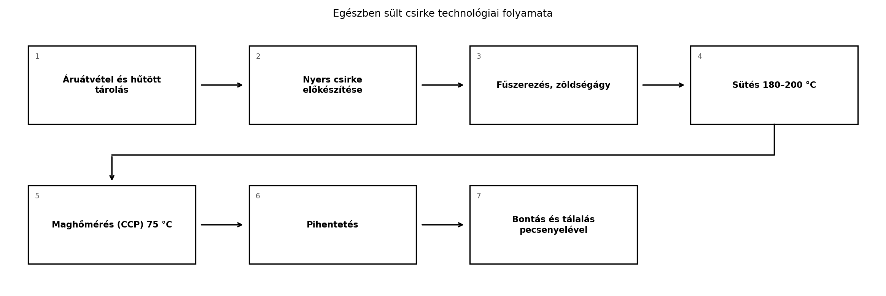

Vasárnapi ebéd vagy karácsonyi menü: az asztal közepére kerül egy ropogós bőrű, illatos, egészben sült csirke, kacsa vagy pulyka. Az egészben sült szárnyas látványos, vendéglátó étel, de a bőr alatti hús csak akkor biztonságos, ha a legvastagabb rész, különösen a comb és a töltelék, eléri a megfelelő maghőmérsékletet. Ha kívül már szép piros, belül viszont még nyers marad, az élelmiszer-biztonsági hiba; ha túlsütjük, a hús száraz lesz. Ebben az alfejezetben az egészben sütés technológiáját, a töltelék biztonságát, a bontást és a pecsenyelé készítését tanuljuk meg.
Képzelj el egy tepsiben lévő egész csirkét. A bőre vékonyan megbarnult, a combjába szúrt digitális maghőmérő 75 °C-ot mutat, a tepsi alján sült hagyma, sárgarépa és zeller barnul. A szakács kiveszi a csirkét, pihenteti, majd combra, mellre és szárnyra bontja. A tepsi barna, letapadt részeit felönti egy kevés alaplével, felforralja, leszűri – ebből lesz a fényes pecsenyelé. Az egész folyamat így ábrázolható:

Definíció. Az egészben sütés olyan száraz hőkezelési eljárás, amelynek során a szárnyast egyben, bőrével, csontjával együtt készítjük el sütőben, amíg a hús legvastagabb részén mérhető maghőmérséklet el nem éri a biztonságos, HACCP-tervben rögzített értéket.
Definíció. A töltelék olyan, a szárnyas hasüregébe helyezett, általában keményítőtartalmú keverék, amelyet fűszereznek, gyakran tojással, tejjel, zsemlével, rizzsel, gesztenyével vagy aszalt gyümölccsel dúsítanak. Töltelék készülhet kenyérből, zsemléből, főtt rizsből, párolt zöldségből, darált húsból, májból vagy gyümölcsből is.
Szabály. Egészben sütésnél a szárnyast előbb szárazra töröljük; nyers baromfit tilos folyó víz alatt mosni, mert a fröccsenő víz keresztszennyezheti a konyha felületeit és más élelmiszereit. A sót, fűszereket a hasüregbe és a bőr alá is bedörzsöljük, hogy a hús belülről is ízesüljön.
Szabály. A sütő hőmérsékletét a szárnyas mérete és a bőr kívánt színe szerint választjuk meg. Az egész csirkét jellemzően 180–200 °C-on sütjük, a nagyobb pulykát alacsonyabb hőfokon, hosszabb ideig; a pontos hőfokot és időt az üzemi receptúra vagy a HACCP-terv határozza meg (ellenőrizendő: sütő típus, konkrét hőfok és idő).
Higiénia. A nyers baromfi hűtőszekrényben, zárt edényben, az alsó polcon tárolandó. Az előkészítéshez külön deszkát, külön kést használunk; a munkaeszközöket használat után azonnal elmossuk. A nyers baromfival érintkezett kezet alaposan megmossuk, mielőtt más élelmiszerhez nyúlnánk.
Kritikus pont. Az egészben sütés hőkezelése CCP: a biztonságos maghőmérséklet a baromfiban tanulási értékként legalább 75 °C a legvastagabb részben (ellenőrizendő: a HACCP-terv és a NÉBIH-útmutató konkrét értéke). A töltelék közepén is legalább ugyanezt az értéket kell mérni. Ha a mért érték alacsonyabb, a szárnyast tovább kell sütni, és a mérést meg kell ismételni.
A folyamatot az egészben sült csirke példáján mutatjuk be.
Figyelem. A hőmérő szondáját mérés előtt és után fertőtleníteni kell, hogy a nyers hús nedve ne szennyezhesse a kész ételt.
Szabály. A nyers vagy csak langyos csepegőlét tilos mártásba tenni. A pecsenyelét mindig felforraljuk, és csak utána szűrjük, ízesítjük.
A mérés és a bontás két kulcsmozzanatát rajz foglalja össze.
Az (a) rajz a 12. lépést mutatja: az 1-es szonda hegye a comb legvastagabb részében van, csontot nem érint; töltött csirkénél a 2-es szonda a töltelék közepén mér. A csontot érintő szonda (✗) a jól vezető csont miatt magasabb értéket mutathat, mint a hús valódi maghőmérséklete, ezért a nyers rész észrevétlen marad. A (b) rajz számai a 15–17. lépés sorrendjét követik. A HTML-kiadásban előbb a mérési pontokat, majd a vágásokat egyenként lapozhatod.
Szabály. Töltött szárnyasnál a tölteléket előre elkészítjük, és hűtve (5 °C alatt) töltjük a szárnyasba közvetlenül a sütés előtt; sem forró, sem langyos tölteléket nem töltünk a nyers szárnyasba, mert a langyos (kb. 30–45 °C) töltelék a nyers baromfi hasüregében a baktériumok szaporodásának kedvez. A töltött nyers szárnyast nem tároljuk, azonnal sütjük. Biztonságosabb, ha a tölteléket külön, kizsírozott formában sütjük ki (ellenőrizendő: HACCP-terv).
Töltelékek jellemzői:
Kritikus pont. A töltelék hőszigetelő rétegként viselkedik, ezért a szárnyas combjában mért 75 °C nem bizonyítja, hogy a töltelék közepén is 75 °C van. A szondát a töltelék közepébe is be kell szúrni. A töltött szárnyast csak akkor tekinthetjük késznek, ha mind a hús, mind a töltelék elérte a HACCP-tervben rögzített maghőmérsékletet.
Allergén. A töltelék gyakori allergénforrás: glutén (zsemle, kenyér), tojás, tej (vaj, tejszín), zeller (leveszöldség). Az étlapon és a vendég tájékoztatásában pontosan jelölni kell. A töltelékből kimaradt nyers masszát külön, zsírozott formában sütjük ki, és a maghőmérsékletét ott is mérjük.
Az alábbi táblázat a leggyakoribb egészben sült szárnyasok jellemzőit foglalja össze. A hőmérsékleti és időadatok tanulási értékek; az üzemi HACCP-terv és a receptúra a mérvadó.
| Szárnyas | Előkészítés lényege | Sütési jelleg | Cél-maghőmérséklet (°C) | Tálalási forma |
|---|---|---|---|---|
| Csirke | szárazra törlés, sózás, vajas kenés | 180–200 °C, locsolás, pirítás | legalább 75 | negyed vagy fél csirke |
| Kacsa | bőr beirdalása, forrázás, sózás | lassúbb sütés, zsír leöntése | legalább 75–80 | mell és comb |
| Liba | bőr beirdalása, fűszerezés | lassú, zsírjában sütés | legalább 75–80 | comb, mell, bőr |
| Pulyka | száraz sózás, töltelék | alacsony hőfok, hosszú idő, pihentetés | legalább 75 (töltelékben is) | szeletelve |
Kacsa és liba bőrét sütés előtt érdemes beirdalni, hogy a zsír kisüljön, a bőr ropogós legyen. A kisült zsírt leöntjük, és más ételhez felhasználhatjuk. A libacomb akkor lesz jó, ha a zsírban hosszan, lassan puhul; a maghőmérséklet mellett a hús érzékszervi jeleit is figyeljük.
Pulyka esetében a nagyobb tömeg miatt a hőkezelés hosszabb. A pulykát kezdetben letakarhatjuk, hogy a bőre ne égjen meg, majd az utolsó szakaszban pirítjuk. A töltelék itt a legkockázatosabb, mert a nagy testű madár lassan melegszik át; a maghőmérőt a töltelék közepébe is szúrjuk.
Az egészben sült szárnyasnál a nyers tömegből sütés közben víz és zsír távozik; a kész, csontos sült tömeg kisebb. A veszteségszázalékot így számítjuk:
ahol
-
az előkészített, fűszerezett nyers szárnyas tömege (g vagy kg),
-
a sütés utáni, pihentetett, de még csontos tömeg (g vagy kg).
Számítás. Tegyük fel, hogy 3 db egész csirkét készítünk, egyenként 1,2 kg-osak; az előkészített nyers tömeg összesen . Sütés után a csontos, bőrös sült tömeg . A sütési veszteség:
Ellenőrzés. A veszteség 30,6 %; a nyers tömeg 30,6 %-a: . A sült tömeg tehát . Ez tanulási érték; a tényleges sütési veszteség a szárnyas fajtájától, méretétől és a sütési módtól függ (ellenőrizendő: üzemi receptúra).
Adagszám: 10 adag
Adagsúly: kb. 250 g sült csirke bőrrel, csonttal,
pecsenyelével
| Nyersanyag | Mennyiség 10 adagra | Megjegyzés |
|---|---|---|
| Egész csirke | 3 db (kb. 3,6 kg) | egészben, belsőség nélkül |
| Vaj | 120 g | allergén: tej |
| Vöröshagyma | 200 g | tisztítva, durvára vágva |
| Sárgarépa | 300 g | tisztítva, karikázva |
| Zeller | 100 g | tisztítva, allergén: zeller |
| Fokhagyma | 15 g | tisztítva |
| Citrom | 1 db (kb. 100 g) | félbe vágva |
| Só | 30 g | |
| Őrölt fűszerpaprika | 8 g | |
| Egész fekete bors | 3 g | |
| Friss kakukkfű | 5 g | |
| Alaplé vagy víz | kb. 300 ml | pecsenyeléhez |
Allergének: tej (vaj), zeller (zöldségágy). A pecsenyeléhez használt alaplé is tartalmazhat zellert; jelölni kell.
Eszközök: tepsik, sütő, digitális maghőmérő, konyhai zsineg, vágódeszka, éles csontozó- és szeletelőkés, merőkanál, szita, hőálló tálak.
Előkészítés
Elkészítés
Kritikus pontok
Pecsenyelé és tálalás
Minőségi követelmények: a bőr aranybarna, ropogós; a hús fehér, omlós, nem száraz; a pecsenyelé tiszta, zsírtalanított, barna; a zöldség puha.
Cél: a tanuló önállóan elkészít egy töltött csirkét, és a sütést CCP-ként kezeli.
Eszközök és anyagok (tanulási adat, 1 db csirkére): 1 db csirke (kb. 1,2 kg), töltelékhez 150 g zsemle, 150 ml tej, 1 tojás, 50 g vöröshagyma, 20 g vaj, petrezselyem, só, bors; lapos edény a töltelék hűtéséhez, konyhai zsineg, maghőmérő, külön deszka és kés a nyers baromfihoz. Allergének: glutén, tojás, tej (zeller, ha zöldség is kerül a töltelékbe).
Biztonsági korlát. Ezt a műveletet tankonyhán vagy oktatói felügyelettel gyakorold; otthon csak a leírt biztonsági feltételekkel. A sütőajtót óvatosan nyisd; a forró zsír fröccsenhet. A zsiradéktüzet tilos vízzel oltani; használj oltótakarót vagy F osztályú tűzoltó készüléket.
Higiéniai előkészület: kézmosás, tiszta kötény, hajháló, a nyers baromfihoz külön deszka és kés.
Számozott lépések
Dokumentálás: a maghőmérsékleteket, az időpontokat és a helyesbítő tevékenységet a HACCP-lapon rögzítsd.
Az egészben sült szárnyas akkor jó, ha:
Hiba: A csirke bőre megégett, de a combban a
hőmérséklet alacsony.
Ok: túl magas sütőhőmérséklet vagy a csirke túl közel
volt a felső hősugárzóhoz.
Helyes gyakorlat: közepes hőfokon sütjük, a pirítási
szakaszt külön szabályozzuk, és mindig maghőmérővel ellenőrzünk.
Hiba: A töltelék nyers maradt, de a hús látszólag
kész.
Ok: a szondát csak a combba szúrták, a tölteléket nem
mérték meg; a töltelék szigetel.
Helyes gyakorlat: a szondát a töltelék közepébe is
szúrjuk, és a CCP határértéket ott is betartjuk.
Hiba: A pecsenyelé keserű vagy zavaros, nyers
ízű.
Ok: a tepsi barna része leégett, vagy a nyers
csepegőlét nem forralták fel.
Helyes gyakorlat: a sütés közben a zöldségágyat ne
hagyjuk megégni; a levet felforraljuk és leszűrjük.
Egy rendezvényen a konyhai csapat töltött pulykát sütött. A pulyka bőre szép piros lett, a sütőből kivették, de a maghőmérőt csak a mellbe szúrták. A pulykát felszeletelték; a vendégek többsége a mellszeleteket kapta. A töltelék azonban a közepén alig érte el az 58 °C-ot. Aznap a vendégek panaszai alapján a konyha visszahívta az ételt. A még ki nem adott tölteléket és a visszahozott adagokat selejtezték (a már kiszolgált ételt újra hőkezelve nem lehet biztonságossá tenni), az eltérést a HACCP-lapon dokumentálták, a megőrzött ételmintát elkülönítették, a panaszos vendégeket tájékoztatták (ellenőrizendő: hatósági bejelentési kötelezettség, ételminta-szabály). A tanulság: a töltött szárnyasnál a töltelék közepén mért maghőmérséklet önálló CCP, és a sütési idő önmagában nem elég.
1. feladat (A)
Sorolj fel három higiéniai szabályt a nyers baromfi előkészítésénél.
2. feladat (A)
Számítsd ki a sütési veszteséget: a nyers, előkészített csirke 4,8 kg, a
sült csontos tömeg 3,4 kg. Mennyi a veszteségszázalék?
3. feladat (B)
Tedd sorrendbe az egészben sült csirke lépéseit: maghőmérés, pihentetés,
fűszerezés, áruátvétel, bontás, zöldségágy készítése, sütés, pecsenyelé
forralása.
4. feladat (B)
Töltsd ki a CCP-sort az egészben sült csirkére: veszély, kritikus határ,
megfigyelés, helyesbítés, dokumentálás.
5. feladat (C)
Egy töltött pulyka nyers tömege a töltelékkel együtt 7,0 kg (ebből 1,5
kg a töltelék). A pulyka sütési vesztesége 32 %, a töltelék tömege sütés
közben nem változik (tanulási feltevés). Mekkora a kész tömeg, és hány
200 g-os adagot tudsz felszeletelni? (A töltelék tömegét is
beleszámítjuk a kész tömegbe.)
6. feladat (D)
A gyakorlaton a töltött csirke bőre megégett, a töltelék maghőmérséklete
62 °C. Mi lehet a hiba, és mit kell tenni helyesbítésként? Írd le a
mérést és a helyesbítést is.
1. feladat
Például: külön deszka és kés; nyers baromfi hűtőben, alsó polcon, zárt
edényben; eszközök azonnali mosogatása; a baromfi nem mosható folyó víz
alatt; kézmosás a baromfi érintése után.
2. feladat
3. feladat
Áruátvétel → zöldségágy készítése → fűszerezés → sütés → maghőmérés →
pihentetés → pecsenyelé forralása → bontás.
4. feladat
- Veszély: a túlélő kórokozók a nyers baromfiban.
- Kritikus határ: maghőmérséklet legalább 75 °C a legvastagabb részen
(ellenőrizendő).
- Megfigyelés: digitális maghőmérővel a combban, töltöttnél a
töltelékben is.
- Helyesbítés: tovább sütés, új mérés.
- Dokumentálás: mérési lap, HACCP-feljegyzés.
5. feladat
A töltetlen pulyka nyers tömege:
.
A kész tömeg:
.
Adagok:
;
,
tehát 26 teljes adag (a maradék kevesebb, mint 200 g).
6. feladat
A bőr leégése a túl magas sütőhőmérsékletre, a töltelék alacsony maghője
a túl rövid hőkezelésre, a túl tömör vagy túl nagy mennyiségű töltelékre
(lassan melegszik át) utal. A tölteléket ettől függetlenül hidegen
töltjük; a megoldás a mérsékelt sütőhő, a hosszabb idő, a lazább töltés
vagy a töltelék külön formában sütése. Helyesbítés: a sütő hőfokát
mérsékeljük, a csirkét folytatjuk sütni, a maghőmérőt a töltelék
közepébe is beszúrjuk; a mérést megismételjük, amíg el nem éri a 75
°C-ot.
Az egészben sült szárnyas akkor biztonságos és jó minőségű, ha a bőr ropogós, a hús pedig a legvastagabb részben eléri a HACCP-tervben rögzített maghőmérsékletet. A nyers baromfit tilos folyó víz alatt mosni, külön deszkát és kést használunk, az eszközöket azonnal mossuk. A csirkét szárazra töröljük, sózzuk, vajjal kenjük; a hasüregbe citromot, fokhagymát és friss fűszereket helyezünk. A sütés 180–200 °C-on folyik, a combban mért célérték legalább 75 °C (ellenőrizendő). A töltött szárnyasnál a töltelék közepén is mérünk; a töltelék nem lehet nyers. A sütési veszteséget a képlettel számítjuk. A pecsenyeléhez a tepsi barna részeit alaplével feloldjuk, felforraljuk és szűrjük. Továbbvitt eredmény. Az itt bemutatott sütési, maghőmérséklet-mérési és pecsenyelé-készítési lépéseket használjuk fel a Frissen sütéssel készülő szárnyasételek alfejezetben, amikor a bontott részeket sütjük.